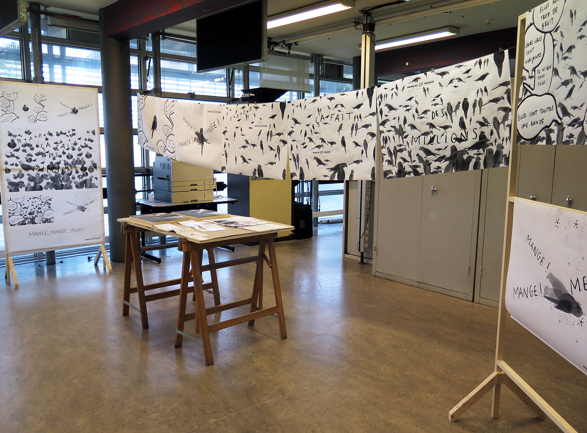
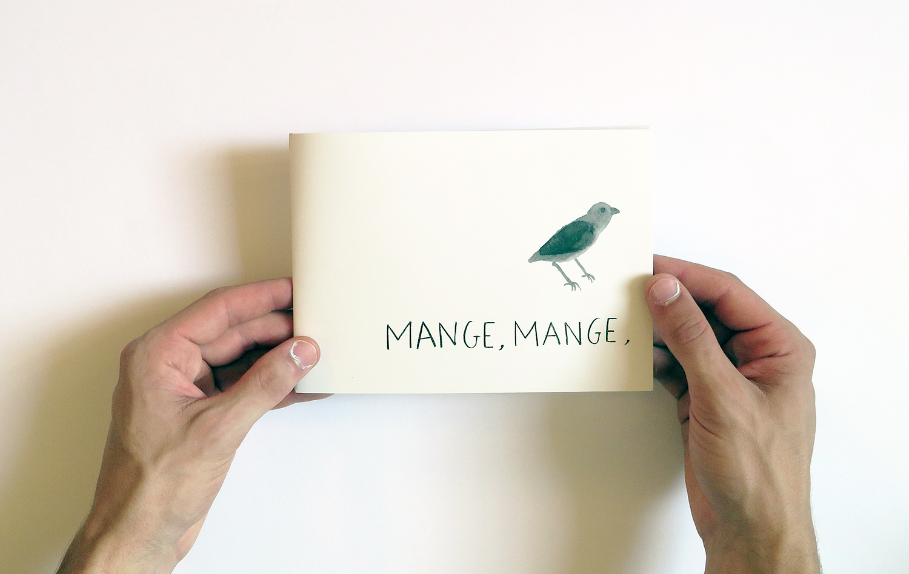
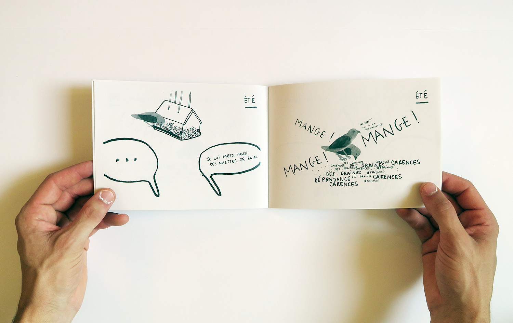
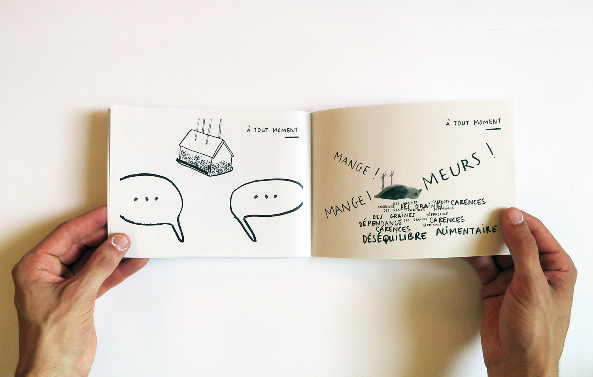
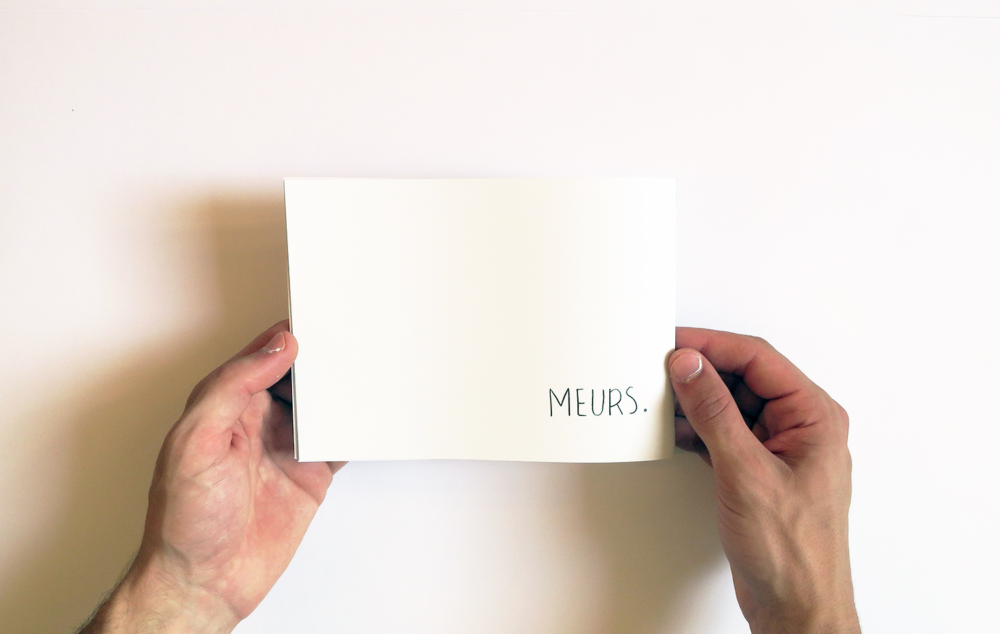
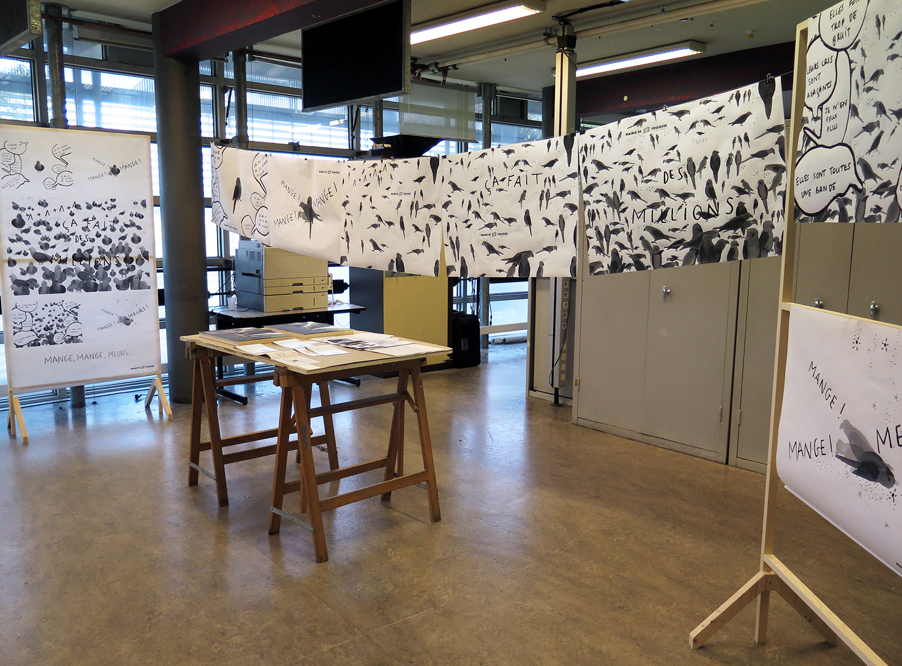
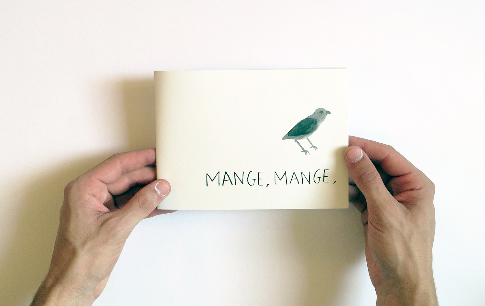
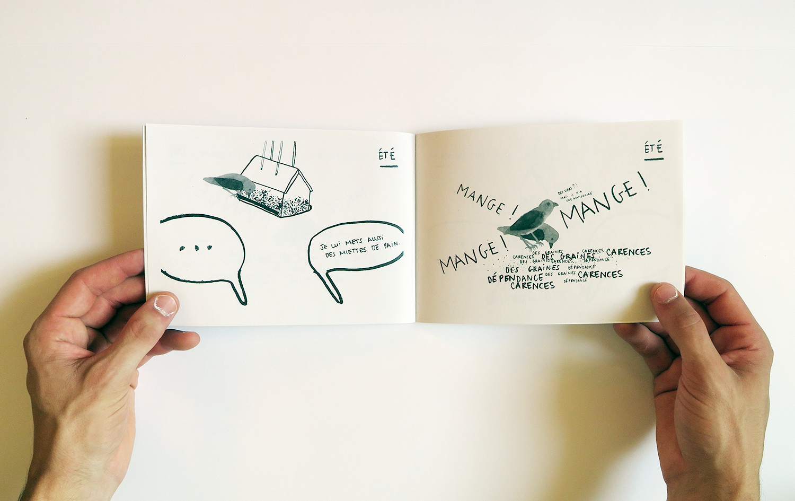
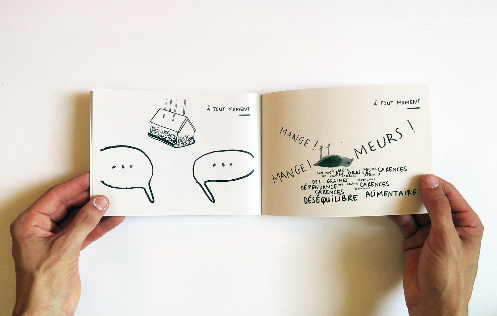
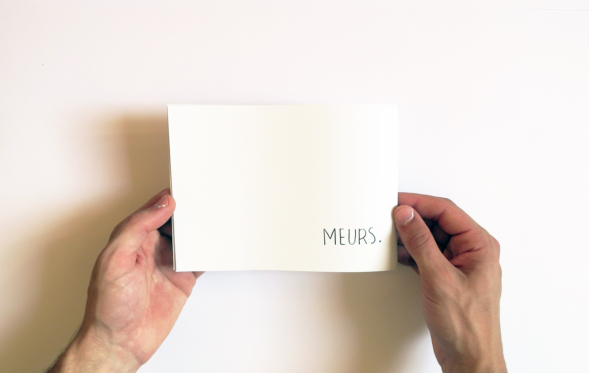

Mange, mange, meurs.
Sensibiliser les personnes aux conséquences du nourrissages des animaux liminaires.
Le nourrissage des animaux liminaires, que ce soit les pigeons, les perruches à collier, ou encore l'utilisation de mangeoires, est souvent au départ une "bonne intention".
Cependant, le nourrissage mène souvent à des nuisances pour les êtres humains par la prolifération des animaux par exemple, et la mort ou mauvaise santé des animaux (éradication à cause de leur prolifération ou mal-nutrition des oisillons par exemple).
Ce projet vise à sensibiliser les nourrisseurs aux conséquences de leurs actes sous forme de minis bande-dessinées exposées sur les lieux de nourrissage (souvent connus) ou de livret reçu chez soi (pour les mangeoires).
(Projet fictif) Campagne d'affichage municipale - Livret reçu par les habitants